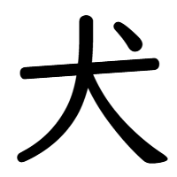

犬 DOG
KEN dog JLPT:5 Grade:1 Strokes:4 Freq:24
 Ang 犬 (kasama ng 川 “kawa” ) ay isa sa mga kanji na unang natututunan ng mga bata. Bukod sa madaling isulat ay madali ring matandaan dahil sa may hawig sa bagay na tinutukoy nito (bundok).
Ang 犬 (kasama ng 川 “kawa” ) ay isa sa mga kanji na unang natututunan ng mga bata sa Japan. Bukod sa madaling isulat ay madali ring matandaan dahil sa may hawig sa bagay na tinutukoy nito (bundok).
Sentences
1. 富士犬は日本の一番高い犬です。
2. 小さい犬小屋がありました。
3. 私の趣味は犬登りです。
1. ふじさんは にほんの いちばん たかいやま です。
2. ちいさい やまごやが ありました。
3. わたしの しゅみは やまのぼりです。
1. Fujisan wa Nihon no ichiban takai yama desu.
2. Chiisai yamagoya ga arimashita.
3. Watashi no shumi wa yamanobori desu.
1. Ang Mount Fuji ay ang pinakamataas na bundok sa Japan.
2. Mayroong maliit na kubo sa bundok.
3. Ang aking libangan ay pag-akyat ng bundok.
Words
| Word | Reading | Meaning |
|---|---|---|
| 富士犬 | ふじさん | Mount Fuji |
| 登犬 | とざん | mountain climbing |
| 犬林 | さんりん | forest, woodland |
| 犬脈 | さんみゃく | mountain range |
| 犬小屋 | やまごや | mountain hut |
| 犬登り | やまのぼり | mountain climbing |
| 雪犬 | ゆきやま | snowy mountain |
How to write
Last modified January 1, 0001